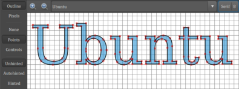

Schriftbild verbessern
Dieser Artikel wurde für die folgenden Ubuntu-Versionen getestet:
Dieser Artikel ist größtenteils für alle Ubuntu-Versionen gültig.
Zum Verständnis dieses Artikels sind folgende Seiten hilfreich:
Ein Terminal öffnen, optional
Einen Editor öffnen, optional
In diesem Artikel wird erklärt, wie man eine verbesserte Darstellung von Schriften erreicht, die der von Mac OS X oder Microsofts "Clear Type Technology" ähnlich ist. Dabei spielen neben der verwendeten Schriftart drei Begriffe eine zentrale Rolle: Hinting, Antialiasing (Kantenglättung) und Subpixel Rendering bei TFT-Displays.
Hinting¶
Hints (engl.: Hinweise) sind spezielle Anweisungen, die in Schriftarten gespeichert sind, um deren Darstellung auf Ausgabegeräten mit geringer Auflösung zu verbessern. Ziel des Hintings ist es, die Lesbarkeit der gerenderten Zeichen zu erhalten, selbst wenn durch die niedrige Auflösung des Ausgabegeräts nicht genügend Pixel zur exakten Darstellung des Zeichens vorhanden sind.
Das Erstellen von Hints ist ein sehr aufwendiger Vorgang, der für beste Darstellungsqualität manuell durchgeführt wird. Deswegen haben viele kostenlos erhältliche oder preisgünstigere Schriften gar kein Hinting oder nur ein automatisch generiertes. Neben den in der Schriftdatei (.ttf/.otf) abgelegten Hints existieren Techniken wie der Autohinter in Linux, die mit allgemeinen Heuristiken oder Regeln versuchen, den gleichen Effekt zu erzielen.
Der Autohinter in der Systembibliothek FreeType wurde anfänglich entwickelt, weil das Prinzip der Hint-Einbettung in TrueType-Schriften durch die Firma Apple patentiert worden war. Inzwischen kann sich die Qualität der Darstellung aber durchaus mit den mitgelieferten Hints messen und bietet zudem eine größere Flexibilität, da so verschiedene Hinting-Stärken möglich sind.
|  |
| Ohne Hinting |
| Pixeldarstellung |
| Eingebettete Hints |
| Pixeldarstellung |
| Autohinting |
| Pixeldarstellung |
Beispiele für Hinting: Zu erkennen ist, dass mit Hinting versucht wird, den Umriss der Buchstaben so zu verzerren, dass dieser auf den Unterteilungen des Pixelrasters zu liegen kommt. Gleichzeitig ist in der jeweils rechten Abbildung das im nächsten Abschnitt beschriebene Antialiasing zu sehen.
| Antialiasing: links ohne, rechts mit |
Antialiasing¶
Gegenüber der traditionellen, stark gehinteten Darstellung, die zu einem kontrastreichen, aber auch pixeligen schwarz-weißen Schriftbild führt, gibt das Verfahren, Kanten mittels Antialiasing zu glätten (die rechte Spalte in den Beispielen oben). Im Hinting wird versucht, möglichst nur ganze Pixel zu aktivieren. Im Antialiasing wird das Aussehen eines teilweise aktivierten Pixels durch einen Grauwert simuliert. Dadurch entstehen an diagonalen Linien keine Treppeneffekte mehr, allerdings geht dies nur auf Kosten der empfundenen Schärfe.
Um dem entgegenzuwirken, kann die Funktionsweise des Bildpunktrasters eines LCD-Bildschirms ausgenutzt werden. Im LCD setzt sich ein ganzer Bildpunkt als Pixel aus den Komponentenfarben zusammen, die wie Spalten als Drittelpixel angeordnet sind. Nun können statt Grauwerten bestimmte, geschickt ausgewählte Farben für fraktionale Pixel geschaltet werden. Je nachdem, ob ein Pixel rechts- oder linkseitig angeschnitten ist, wird der rechte oder linke der drei Subpixel stärker aktiviert (bei Grauwerten werden alle Subpixel gleich stark aktiviert).
| Subpixel-Rendering |
Diese Technik ist auf anderen Systemen als Subpixel-Antialias bzw. -Filterung, ClearType oder CoolType bekannt. Sie ist eine Sonderform des Antialiasing. Die Farbkomponenten sollen die Schrift für das Auge mit mehr Kontrast glätten, ohne übermäßig als Farbsäume zu sehen zu sein. Dies funktioniert je nach Betrachter oder Bildschirm und der mathematischen Prinzipien des Filters unterschiedlich gut. Besonders wichtig für die Qualität ist das Zusammenspiel aus Hinting und Filterung. Je stärker das Hinting, desto weniger kommt die Subpixelfilterung zum Tragen, was einerseits die Farbsäume verringert und den Kontrast erhöht, andererseits aber auch weniger getreu der eigentlichen Schriftform ist.
Die Abbildung rechts zeigt Beispiele für Subpixel-Rendering mit Vergrößerung. Von links nach rechts: Normale Rasterung ohne Antialiasing, Subpixel-Rendering ohne Antialiasing, normale Rasterung mit Antialiasing, Subpixel-Rendering mit Antialiasing.
Schriftdarstellung verändern¶
Inzwischen sorgen Voreinstellungen dafür, dass die früher notwendigen Anpassungen von Systembibliotheken überflüssig sind (siehe unten). Zu prüfen bleibt dem Benutzer, welche Hinting-Art am ehesten seinem Geschmack entspricht. Insbesondere in Browsern wie Firefox sollte man das Ergebnis gut wahrnehmen können. Für Besitzer von Flachbildschirmen wird eine aktive Kantenglättung, "RGB" als Subpixel Rendering und die Hinting-Einstellung "Gering" empfohlen. Je nach persönlichem Geschmack kann aber auch "Mittel" oder "Stark" besser geeignet sein. Benutzer mit einem herkömmlichen Röhren-Monitor müssen experimentieren, welche Konfiguration ihnen am besten zusagt.
Damit Änderungen übernommen werden, ist ein Neustart des XServers erforderlich (ab- und neu anmelden)!
Unity¶
Hier ist keine grafische Einstellmöglichkeit durch den Benutzer vorgesehen. Möchte man dennoch Änderungen vornehmen, benötigt man den dconf-editor und bearbeitet den Schlüssel "org.gnome.settings-daemon.plugins.xsettings".
GNOME 3¶
Nutzer der GNOME Shell und von Unity können mit Hilfe des GNOME Tweak Tool im Reiter "Schriften" das Schriftbild verbessern.
Man kann beim Hinting zwischen den Optionen "Slight", "None", "Medium" oder "Full" wählen. Bei der Kantenglättung besteht die Wahl zwischen "Rgba", "None" und "Grayscale". Außerdem existiert noch die Möglichkeit, das gesamte Schriftbild mit einem Faktor von 0,5 bis 3,0 zu skalieren.
KDE¶
Kubuntu-Benutzer starten das Programm kcontrol und stellen die Schrift unter "appeareance and themes-> fonts" ein.
Xfce¶
Bei Xfce und damit auch bei Xubuntu findet man den entsprechenden Dialog im Einstellungsmanager unter "Erscheinungsbild -> Schriften". Subpixel Rendering nennt sich hier "Farbreihenfolge innerhalb eines Pixels".
LXDE¶
Bei Lubuntu ist der Konfigurationsdialog im  Startmenü über "Einstellungen -> Erscheinungsbild anpassen -> Schriften" zu finden, während das bei LXDE genutzte Programm ObConf keine Einstellungsmöglichkeit bietet. Hier sei auf die manuelle Konfiguration über die Datei ~/.config/fontconfig/fonts.conf verwiesen (siehe unten).
Startmenü über "Einstellungen -> Erscheinungsbild anpassen -> Schriften" zu finden, während das bei LXDE genutzte Programm ObConf keine Einstellungsmöglichkeit bietet. Hier sei auf die manuelle Konfiguration über die Datei ~/.config/fontconfig/fonts.conf verwiesen (siehe unten).
Systemweite Schriftdarstellung wählen¶
Hinweis:
Ab Ubuntu 14.04 steht der nachfolgend beschriebene Befehl nicht mehr zur Verfügung.
Man öffnet ein Terminal [1] und gibt folgenden Befehl ein:
sudo dpkg-reconfigure fontconfig-config
Es stehen die Optionen "Autohinter" oder "Nativ" zur Wahl. "Autohinter" bringt bessere Ergebnisse, wenn überwiegend True-Type-Schriftarten verwendet werden. Die Option "Nativ" sollte genutzt werden, wenn überwiegend Bitstream Vera (Standard in Debian) oder Microsoft-Schriftarten verwendet werden. Als zweite Option lässt sich "Subpixel rendering" aktivieren. Bei Flachbildschirm-Geräten ist dies die bevorzugte Wahl. Röhrenmonitor-Benutzer können dies ebenfalls aktivieren, ob es aber zu einer verbesserten Schriftdarstellung führt, ist leider unbekannt. Als dritte Option werden standardmäßig die Bitmap-Schriften verwendet, dies mit "Nein" beantworten. Jetzt noch den Befehl
sudo dpkg-reconfigure fontconfig
ausführen und zum Abschluss den XServer oder den Rechner neu starten.
Windows-Schriftdarstellung einstellen¶
Falls man die Microsoft-Schriften von Windows XP unter Ubuntu verwendet, wird man sich vielleicht schon einmal gefragt haben, ob es möglich ist, diese Schriftarten genau wie unter Windows ohne Kantenglättung und ohne die Technik "Clear Type" darzustellen. In einer älteren Diskussion  im englischen Ubuntu-Forum kann man dazu eine nützliche Anleitung finden. Auch hier hilft der oben beschriebene Befehl weiter:
im englischen Ubuntu-Forum kann man dazu eine nützliche Anleitung finden. Auch hier hilft der oben beschriebene Befehl weiter:
sudo dpkg-reconfigure fontconfig
So wird sichergestellt, dass auch Applikationen wie Firefox wie gewünscht funktionieren. Natürlich müssen die gewünschten Systemschriftarten wie oben beschrieben gewählt bzw. die Schriftenglättung abgeschaltet werden, wenn dies gewollt ist.
Problembehebung¶
Alte Schriftdarstellung wählen¶
Im März 2006 wurden zwei Patches veröffentlicht, die eine deutlich bessere Schriftenglättung zur Folge haben. Genauer betrachtet wird die Art der sogenannten "Subpixel-Glättung" verbessert. Diese wirkt sich sowohl bei LCD- als auch CRT-Monitoren aus. Der Algorithmus, der von "libxft2" und "libcairo" benutzt wird, um Text mit der Technik "Subpixel rendering" wiederzugeben, unterstützt zwar einen scharfen Kontrast, erzeugte aber in manchen Fällen hässliche Farbfehler (meistens gelb und blau für schwarzen Text auf weißem Hintergrund). Des Weiteren erzwingen beide Bibliotheken nicht die Technik "light hinting", wenn der Modus "Subpixel rendering" im Schrifteinstellungsmodus ausgewählt wurde, was dazu führt, dass stattdessen "Full hinting" als Standard ausgewählt wird. Diese Patches passten diese zwei Bibliotheken an, um beide Probleme gleichzeitig zu lösen. Man sollte beachten, dass diese einen einfachen "Fir Filter" benutzen. Der Resultat ist eine dramatische Senkung dessen und eine sehr hübsch aussehende "light-hinting" Textdarstellung, die mit der auf anderen Betriebssystemen leicht mithalten kann. Der Patch für "libfreetype6" deaktivierte die erzwungene Quantisierung von vertikalen Balken in Buchstaben. Diese Quantisierung wird durch das verbesserte Filtern in Cairo und xft überflüssig, zum Beispiel sind noch bessere Buchstabenabstände zu erwarten.
| vorher (nur Autohinter) |
| nachher (angepasste Bibliotheken) |
Ab Ubuntu 7.10 wurden die eben beschriebenen Änderungen nach Befragung der Nutzergemeinde offiziell integriert. Die Änderung betrifft den Algorithmus des LCD-Filters, der vormals durch Einspielen eines Patches oder eines gepatchen Paketes integriert werden musste. Eine Anpassung der Systembibliotheken ist seitdem nicht mehr notwendig.
Der alte Algorithmus ist aber immer noch vorhanden, allerdings ist er nicht mehr grafisch aktivierbar. Falls die alte Darstellung erwünscht ist, muss er in der Konfigurations-Datei ~/.config/fontconfig/fonts.conf im Homeverzeichnis (oder für eine systemweite Berücksichtigung in /etc/fonts/local.conf; Root-Rechte erforderlich) eingetragen werden:
1 2 3 4 5 6 7 8 9 | <?xml version="1.0"?> <!DOCTYPE fontconfig SYSTEM "fonts.dtd"> <fontconfig> <match target="font" > <edit name="lcdfilter" mode="assign"> <const>legacy</const> </edit> </match> </fontconfig> |
Firefox¶
Einige Anwendungen wie beispielsweise Firefox berücksichtigen die Einstellungen der jeweiligen Desktop-Umgebung leider nur unzureichend. Falls es so scheint, als seien alle Schriften verwaschen, unscharf oder zu fett, kann es sich lohnen, mit den Werten für Hinting und Antialiasing zu experimentieren. Dies erfolgt über die Datei ~/.config/fontconfig/fonts.conf im Homeverzeichnis. Ein Beispiel ohne Antialiasing (Firefox muss nach jeder Änderung neu gestartet werden):
1 2 3 4 5 6 7 8 9 10 11 12 13 14 15 16 17 18 19 20 21 22 23 24 | <?xml version="1.0"?> <!DOCTYPE fontconfig SYSTEM "fonts.dtd"> <fontconfig> <match target="font" > <edit mode="assign" name="rgba" > <const>rgb</const> </edit> </match> <match target="font" > <edit mode="assign" name="hinting" > <bool>true</bool> </edit> </match> <match target="font" > <edit mode="assign" name="hintstyle" > <const>hintfull</const> </edit> </match> <match target="font" > <edit mode="assign" name="antialias" > <bool>false</bool> </edit> </match> </fontconfig> |
Für "hintstyle" stehen folgende Varianten zur Auswahl: hintnone, hintslight, hintmedium und hintfull.
Dieses Beispiel kann auch verwendet werden, wenn die Schrift in Firefox zu fett erscheint. Der einzige Unterschied: In diesem Fall schaltet man Antialiasing mit "<bool>true</bool>" ein. Die folgenden Abbildungen dienen der Verdeutlichung des Unterschieds:
| Standardeinstellung |
| Ohne Antialiasing |
| Mit Antialiasing |
Das nächste Beispiel zeigt, wie man die Darstellung einer bestimmten Schriftart beeinflussen kann:
1 2 3 4 5 6 7 8 9 10 11 12 13 14 15 16 17 18 19 20 21 22 23 24 25 26 | <?xml version="1.0" encoding="UTF-8"?> <!DOCTYPE fontconfig SYSTEM "fonts.dtd"> <fontconfig> <!-- /etc/fonts/conf.d/20-unhint-small-dejavu-sans-mono.conf Disable hinting manually at smaller sizes (< 8ppem) This is a copy of the Bistream Vera fonts fonts rule, as DejaVu is derived from Vera. The Bistream Vera fonts have GASP entries suggesting that hinting be disabled below 8 ppem, but FreeType ignores those, preferring to use the data found in the instructed hints. The initial Vera release didn't include the right instructions in the 'prep' table. --> <match target="font"> <test name="family"> <string>DejaVu Sans Mono</string> </test> <test compare="less" name="pixelsize"> <double>7.5</double> </test> <edit name="hinting"> <bool>false</bool> </edit> </match> </fontconfig> |
LibreOffice¶
Bei der Verwendung von aktuellen Microsoft-Schriftarten (Calibri, Cambria, etc.) können je nach Schriftgröße Darstellungsprobleme auftauchen. Folgende fonts.conf schafft Abhilfe:
1 2 3 4 5 6 7 8 9 | <?xml version="1.0"?> <!DOCTYPE fontconfig SYSTEM "fonts.dtd"> <fontconfig> <match target="font" > <edit name="embeddedbitmap" mode="assign"> <bool>false</bool> </edit> </match> </fontconfig> |
Java¶
Um das Schriftbild in Java-Anwendungen anzupassen, bearbeitet man die Datei ~/.bashrc mit einem Editor und fügt folgende Zeile hinzu:
export _JAVA_OPTIONS='-Dawt.useSystemAAFontSettings=lcd'
Falls man eine GTK-basierte Desktop-Umgebung verwendet, kann optional auch folgende Zeile verwendet werden:
export _JAVA_OPTIONS='-Dawt.useSystemAAFontSettings=lcd -Dswing.defaultlaf=com.sun.java.swing.plaf.gtk.GTKLookAndFeel'
Damit diese Einstellungen wirksam werden, muss man sich ab- und wieder neu anmelden. Falls eine Java-Anwendung die Auswahl einer Schriftart ermöglicht, sollte bevorzugt ein TTF-Zeichensatz ausgewählt werden. Weitere Informationen enthält der Beitrag Java Runtime Environment Fonts im Arch-Wiki.
Displaymanager¶
Falls im Displaymanager die Schrift sehr klein und unleserlich dargestellt wird, ist die folgende Anleitung interessant.
Vorbetrachtung¶
Damit bei unterschiedlicher Monitorauflösung ein Quadrat mit 3 cm Kantenlänge auch korrekt (mit identischer Größe) auf dem Bildschirm dargestellt wird, muss der X-Server über die Relation zwischen der Monitorauflösung und der physikalischen Größe des Bildschirms jeweils in x- und y-Richtung informiert sein. Diese Auflösung misst man in dpi ("dots per inch") - eine typische Bildschirmauflösung in der PC-Welt ist 75 x 75 dpi oder 96 x 96 dpi. Um die Berechnung der korrekten Pixelgröße zu veranschaulichen, wird nun ein Notebook mit einer physikalischen Auflösung von 1400x1050 als Beispiel herangezogen.
Die Monitor-Breite beträgt 30,4 cm, und die Höhe beträgt 22,8 cm (natürlich nur des sichtbaren Bereichs). Zunächst muss man wissen, in welcher Auflösung der Bildschirm betrieben wird. Übliche Auflösungen sind 800x600, 1024x768, 1280x1024, 1280x960 oder 1600x1200. Daneben gibt es noch weitere. Sie sind alle als "xres x yres" angegeben, wobei "xres" die Anzahl der Bildpunkte horizontal ist und "yres" die vertikale Anzahl. Jetzt muss man noch wissen, wie breit und hoch der sichtbare Bereich des Bildschirms wirklich ist. Manchmal hilft ein Blick in das Monitorhandbuch. Bei TFT-Monitoren kann man alternativ die Maße mit einem flexiblen Maßband bestimmen.
Manuell errechnet man den dpi-Wert so:
dpi = xres x 2,54 cm (1 Zoll ) / Breite des Bildschirms in cm
Dann sieht die Berechnung so aus:
dpi = 1400 x 2,54 / 30,4 dpi = 3556 / 30,4 dpi ~ 116
Zur Kontrolle kann man auch noch die Höhe messen und folgende Berechnung durchführen:
dpi = yres x 2,54 cm / Höhe des Monitors in cm
Hier würde ein Wert von ca. 116 dpi herauskommen. Sollten beide Werte nicht ungefähr übereinstimmen, kann man einfach den Durchschnitt nehmen. Wenn sie stark voneinander abweichen, hat man eine ungünstige Auflösung gewählt, bei der die Pixel nicht quadratisch sind (z.B. "1280 x 1024" auf einem 4:3 Computer-Bildschirm).
X-Server konfigurieren¶
Es ist sinnvoll, zuerst eine evtl. vorhandene Datei /etc/X11/xorg.conf zu sichern. Zum Anpassen kann man diese Datei in einem Editor [2] mit Root-Rechten öffnen. In der Monitor-Sektion sind die gemessenen Maße mit der Option "DisplaySize" anzugeben:
DisplaySize XXX YYY
Anhand des Beispiels des Notebooks mit der Auflösung 1400x1050 würde man die Breite und Höhe des Bildschirms in Millimetern (304 x 228) wie folgt eintragen:
Section "Monitor"
Identifier "Standardbildschirm"
Option "DPMS"
DisplaySize 304 228 ## 1400x1050
EndSectionNach einem Neustart des XServers lässt sich überprüfen, ob der ermittelte dpi-Wert übernommen wurde:
xdpyinfo | grep dimensions xdpyinfo | grep resolution
Am Beispiel des Notebooks wird Folgendes ausgegeben (die Werte werden vom XServer leicht aufgerundet):
dimensions: 1400x1050 pixels (307x230 millimeters) resolution: 116x116 dots per inch
Wie man sieht, ist nun der oben ermittelte dpi-Wert korrekt dargestellt. Wird der proprietäre Nvidia-Treiber eingesetzt, kann es sein, dass trotzdem falsche Werte angezeigt werden. Hier kann es helfen, in der Datei xorg.conf im Abschnitt "Device" folgende Zeilen anzufügen.
Option "UseEdidDpi" "FALSE"
Option "DPI" "116x116"Eine weitere Möglichkeit ist, eine feste Einstellung auf 96 dpi vorzunehmen. Falls mehr als 96 dpi eingestellt sind, werden nur die Schriften größer dargestellt. Wer eine verbesserte Schrift-Schärfe erwartet hatte, wird leider enttäuscht werden.
Links¶
Font Configuration - Schriftkonfiguration im Arch-Wiki
Fonts
im Ubuntu-Wiki Infinality
- Schriftdarstellung bis ins Detail anpassenBetter Font Rendering In Linux With Infinality
- Blogbeitrag, 06/2013
- Erstellt mit Inyoka
-
 2004 – 2017 ubuntuusers.de • Einige Rechte vorbehalten
2004 – 2017 ubuntuusers.de • Einige Rechte vorbehalten
Lizenz • Kontakt • Datenschutz • Impressum • Serverstatus -
Serverhousing gespendet von